アプリ
ブラウザで動く小さな試作。インストールはいらない。ファイルはどこにも送らない。
こども向け
大きいボタンと、キャラクターで、さわって遊べる。(大人が読む解説もページの下にある)
おとで あそぶ
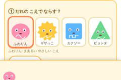
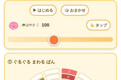
おとならべ
こども向けの、まるい盤のシーケンサー。マスやブロックをタッチしておとを並べる。メロディ・ベース・こうかおん・ドラムがあり、鍵盤やパッドを叩いて録音したり、ドラムのパターンをえらんだり、テキストで保存したりできる。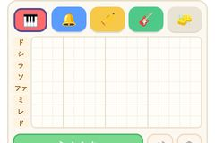
おえかき おんがく
16×8マスのキャンバスを、指でなぞってブロックを置く。光る縦の帯が左から右へ動いて、通ったブロックの高さ(ド〜ド)が鳴る。色が楽器(赤=ピアノ、青=ベル、黄=ふえ、緑=ベース)で、同じ時間に重ねると和音になる。消しゴム・もどす・スピード付き。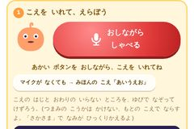
ワクワクボイスチェンジャー
自分の声を録音して、つまみで変えたり、ボコーダーでシンセの声にしたり、かけらに切って、ぐるぐる回る盤に並べて鳴らす。押している間だけ効く絵文字ボタン(ループ・ちかちか・オクターブ・さかさま ほか)もある。声はこの端末の中だけで使われ、外には送られない。
ゲーム
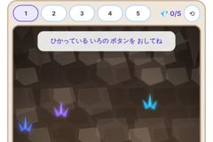
ほうせきの くにの ぼうけん
ドレミの鍵盤を押すと、主人公がその音の高さまでジャンプして、洞窟の中の宝石をあつめる。高い音ほど高く跳ぶので、音の高さが目で見える。ドミソ、ドレミファソ、ドレミ〜ド、きらきらぼし、ちょうちょうの5つのステージがある。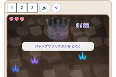
クリスタルの おうかん
ぷにまるが洞窟を自動で走る。ジャンプ(空中でもう一度押すとダブルジャンプ)で、クリスタルを12こあつめる。取るたびに「いち、に、さん…」と声で数えて、12こで王冠が完成する。ばね台に乗ると高く跳べて、コウモリと転がる岩は上から踏める。3ステージ。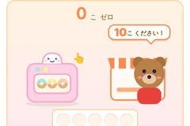
ドーナツやさん
お店に来るお客さん(くま・うさぎ・ユニコーン)が、10こ入り・6こ入り・12こ入りの箱を注文する。オーブンを押してドーナツを焼き、箱をいっぱいにして渡す。ドーナツが1こ入るたびに指が1本ずつ立ち、12こ入りでは指が足りなくなって足の指も使う。箱に入ったドーナツの数を、大きな数字と声で示す。その下の「たべちゃう くまさん」では、くまさんが箱とはみ出したドーナツを1こずつ食べて、1(1こある)と0(なにもない)の違いが見える。さらに下の応用編では、示された数(例: 23)を、10こ入りの箱(ふたが開いて中の10こが見える)とばらでそろえる(箱2つとばら3こ)。ぴったりになると、そろえた数と箱・ばらの並びが出て、みんなでドーナツパーティー(箱が多いほど、集まる仲間が増える)。 「いま○こ」の数を隠したり、数える声を切ったりもできる。
まなぶ
かず・もじ(数の形・数え方・0と1・50音)と、おとの しくみ(フィルター・なみ)を、絵を押して見て覚える。
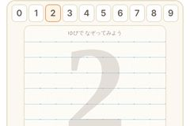
すうじの かたち
うすく出ている数字を指でなぞると、鉛筆で書いたような線が残る。数字のどの部分もだいたいなぞれたら(指を離して少し待ってから見る)、なぞった数字に目玉と2本の足が生えて、とことこ左へ逃げていく。そのあと、その数字の形に似たもの(2=はくちょう、8=ゆきだるま など)のイラストが出てきて、声で読む。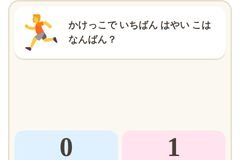
0から？ 1から？
身の回りの数(あかちゃんの年齢・建物の階・ものさし・かけっこ・夜中の時計・ストップウォッチ・ゲーム機・おさいふ・はかり・ランドセル・カレンダー・指の12種類)のカードから4枚が出て、1回4問で終わる。カードを、「0から はじまる」「1から はじまる」の箱に分ける。箱を押すと、その数の並び(0さい→1さい→2さい など)が出て、最初の数が色つきで見える。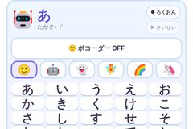
あいうえおシンセ
50音の文字を押すと、その文字の声をボコーダーに通して、ロボットの声で鳴らす。ボコーダーを切ると、声のまま(ふつう)でも聞ける。下の色のボタン(ド〜ド)で高さを選べて、ロボットの顔を押すと音色のつまみが開く。押した順番を録音して再生もできる。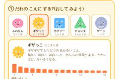
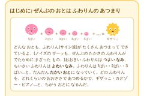
おとな向け(制作に使う・試す)
音づくり・リズム・ミックスの道具や、確かめるための実験。
音を作る
リズム・テンポ
ミックス
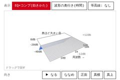
EQとコンプの立体
イコライザーを平面、コンプを奥行きにして、かかり方を立体で見る。グラフィックEQと、シングル/マルチバンドのコンプを直接さわれて、鳴っている音の波形が時間とともに流れる。生ドラムなどの音源や、手元のファイルの一部も使える。